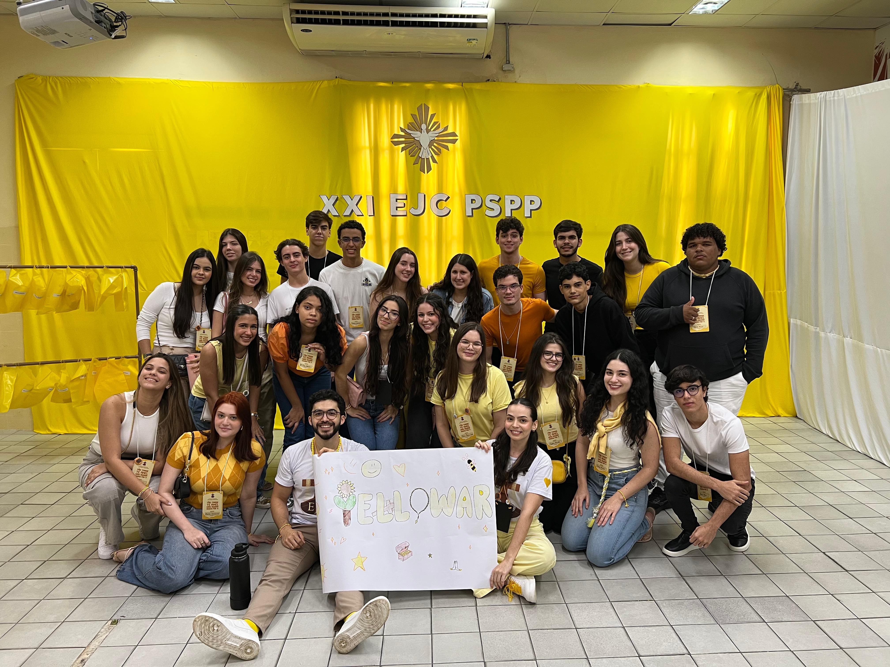
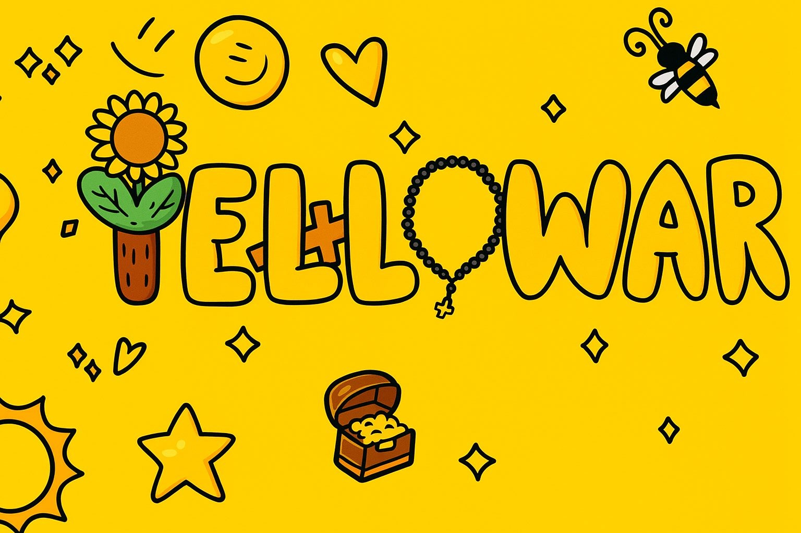
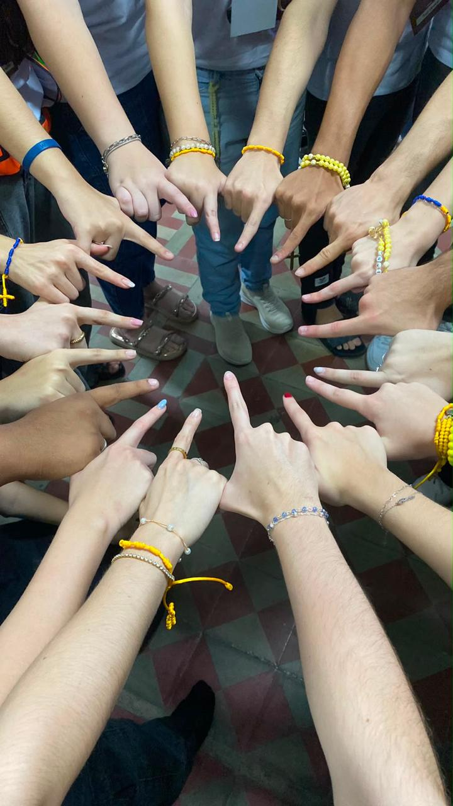

Com você,
o círculo virou casa.
Uma carta amarela do Yellowar
11 de julho de 2025 um dia para guardar
Pai Bruno,
nosso presente
do Yellowar.
Tem gente que chega em um encontro e ajuda a transformar um grupo em casa. Esta é a nossa forma de dizer obrigado.
Aperte para deixar a música acompanhar a sua visita.


11.07.25
com carinho
01 · carta do círculo
Alguns encontros acabam no calendário.
O nosso ficou no coração.
Pai Bruno,
“Obrigado por transformar presença em cuidado. Por fazer do serviço uma forma de abraço e do Yellowar uma lembrança que a gente leva para a vida.”
Com carinho,
família Yellowar
02 · o dia em amarelo
Um dia, muitos corações,
uma só família.
Foi assim que a gente guardou o encontro: em mãos unidas, risadas espalhadas e um amarelo que ninguém esquece.

Uma lembrança feita de gente, fé e muita alegria.
03 · uma inspiração que acompanha você
Em tudo amar
e servir.
Entre o Yellowar, a alegria e a sua devoção por Santo Inácio, existe uma coisa que a gente reconhece: você ensina pelo jeito de estar junto.
04 · pedaços de nós
O que fica
quando o dia passa.
Reunimos os registros da pasta do encontro para você passear por cada detalhe. Clique nas fotos e vá descobrindo a nossa história.
+
para você, Pai Bruno
Obrigado por fazer
parte da nossa história.
Que a vida continue devolvendo todo o amor que você espalha por onde passa.
Com amor família Yellowar! 🌻💛